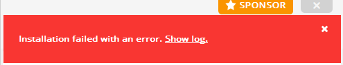

Before reporting a problem, please consider asking a question instead. Of course it's a good idea to read the general instructions for how to use the before doing either.
Keep in mind that we cannot fix the network. Networks and servers can and do fail and this is beyound our control.
Please provide as much detail as possible. I.e., include screen captures and/or attach log details by clicking the Show Log link, as well as information about your operating system version.
